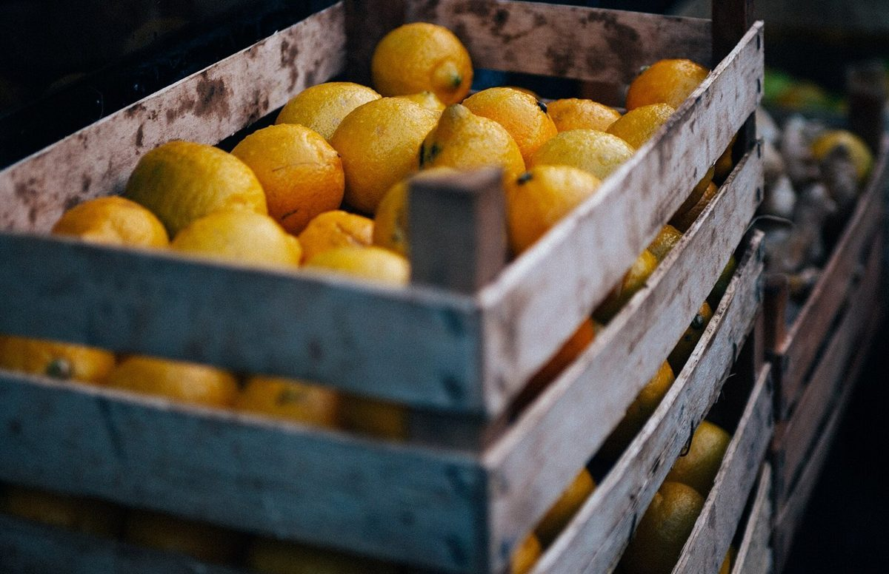
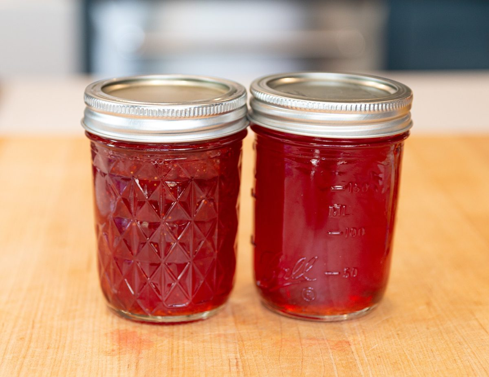
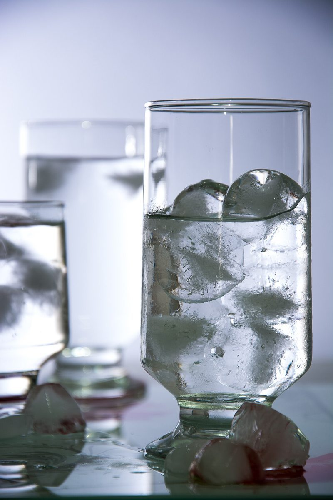

制作側の連想
レモン絞り器の部位を、配置図にしてみる
レモン絞り器(半分に切った果実を押しつけて汁をしぼる、二本腕のレバー式の道具)の部位を図にしたもので、制作側の連想です。お店の理念・由来とは無関係で、実際の製品の仕様を示すものでもありません。六つの部位に番号をふり、上の図と並べています。
凡例
六つの部位
- 1上アームの握り上側の持ち手。ここを握りこむと、先のドームが下へ動く。
- 2押し型(ドーム)上アームの先にぶら下がる半球の型。カップの中へ向かって下りていく。
- 3ヒンジ(軸)二本のアームをつなぐ回転軸。ここを支点に開いたり閉じたりする。
- 4穴あきの絞りカップ半分に切った果実をのせる丸いくぼみで、底に小さな穴がいくつも並ぶ。
- 5注ぎ口カップのふちにある、くちばし形の切り込み。しぼった汁の出口になる。
- 6下アームの握り下側の持ち手。カップを支える側のアームにつながっている。
写真(イメージ)
写真(イメージ)




写真はイメージです。お店のものではありません。
ご案内
お店のこと(確認できたものだけ)
| 所在地 | 〒329-2721 栃木県那須塩原市東町２−４ |
|---|---|
| 電話 | 準備中 |
| 営業時間 | 準備中 |
| 定休日 | 準備中 |
| ご予約 | 準備中 |
| 駐車場 | 準備中 |
| SNS | Instagram @frajalica_kaen |